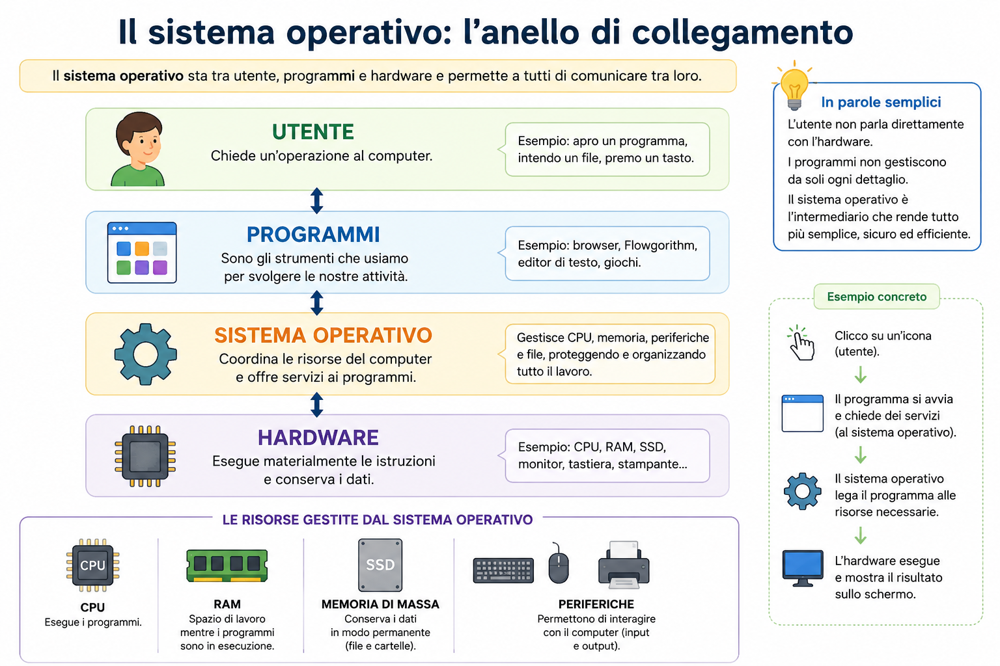
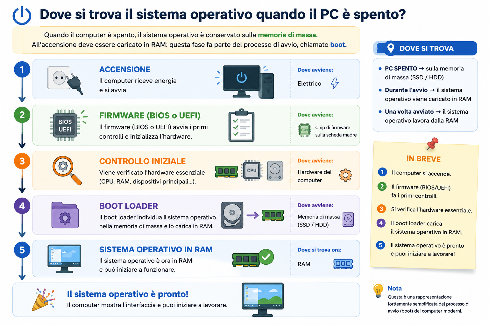
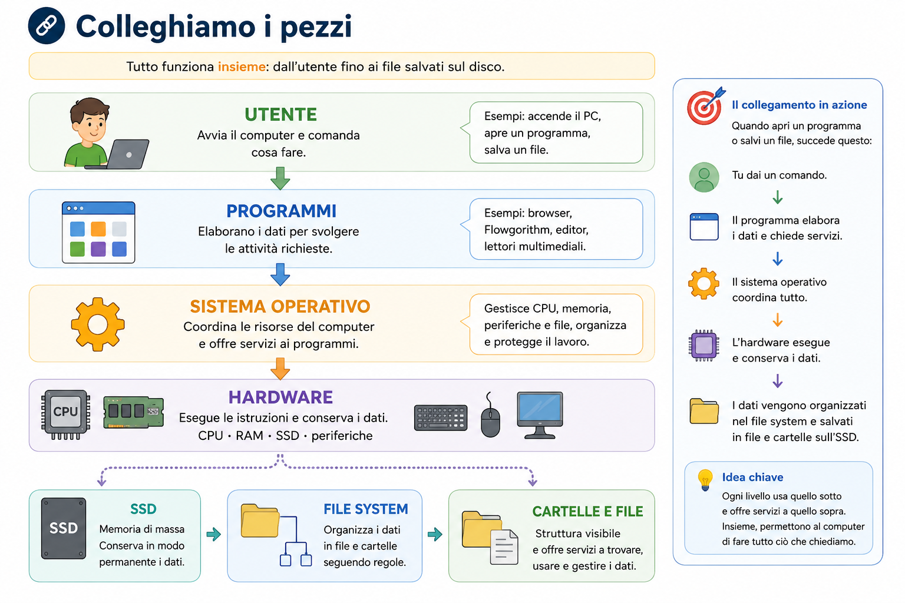

Da R01 al computer che stiamo usando
Nella precedente lezione ponte abbiamo seguito una richiesta dal browser al server Web. Il browser è un programma e usa la rete attraverso l'hardware del computer.
Ora guardiamo ciò che tiene insieme il lavoro: il sistema operativo coordina programma, memoria, CPU, periferiche e file. È il raccordo tra concetti già incontrati nelle lezioni del primo anno.
Obiettivi della lezione
Che cosa fa il sistema operativo?
Quando apri Flowgorithm non devi dire alla CPU come leggere ogni istruzione, né spiegare al monitor come disegnare ogni punto. Il sistema operativo offre ai programmi i servizi necessari.
Il software fondamentale che permette ai programmi e all'utente di utilizzare l'hardware e gestisce risorse come CPU, memoria, periferiche e file.

La mappa è semplificata: mostra i collegamenti essenziali, non tutti gli scambi reali.
Windows, Linux e macOS sono sistemi operativi per computer. Android è un esempio vicino all'esperienza quotidiana sui dispositivi mobili.
Chi gestisce che cosa?
CPU
Il sistema operativo organizza l'esecuzione dei programmi che chiedono di usare il processore.
RAM
Assegna lo spazio necessario ai programmi e ai dati mentre vengono utilizzati.
Periferiche
Coordina la comunicazione con tastiera, mouse, monitor, stampante e altri dispositivi.
Memorie di massa
Organizza dati e programmi in file e cartelle attraverso il file system.
Prima di continuare: se due programmi vogliono utilizzare contemporaneamente le risorse del computer, chi coordina tutto?
Controlla la risposta
Il sistema operativo coordina l'accesso alle risorse e permette ai programmi di utilizzarle in modo organizzato.
Dal disco alla RAM, poi alla CPU
Dove si trova Flowgorithm quando il computer è spento? E dove deve essere portato per poter funzionare?
- Il programma è archiviato.
Quando il computer è spento, Flowgorithm rimane sulla memoria di massa.
- Il programma viene avviato.
Il sistema operativo carica in RAM ciò che serve per utilizzarlo.
- La CPU esegue.
La CPU lavora sulle istruzioni e sui dati disponibili in memoria.
- Il sistema operativo coordina.
Gestisce il passaggio e l'uso delle risorse coinvolte.
Approfondimento — due parole utili da riconoscere
Un passo in più: kernel e processo
Quando avvii un programma, il sistema operativo deve seguirne l'esecuzione e coordinare le risorse che gli servono.
Kernel
È la parte centrale del sistema operativo. Lavora più vicino all'hardware e coordina risorse fondamentali.
Processo
È un programma mentre viene eseguito e viene gestito dal sistema operativo.
Il sistema operativo e le periferiche
Quando premi un tasto o Flowgorithm mostra un risultato sul monitor, il programma deve comunicare con una periferica. Il sistema operativo rende possibile questa comunicazione, anche attraverso software specifici chiamati driver.
Input
Tastiera, mouse e webcam inviano dati al computer.
Output
Monitor e stampante ricevono risultati dal computer.
File system: organizzare la memoria di massa
Una memoria di massa contiene molti dati. Per trovarli e gestirli non basta conservarli: occorre organizzarli.
Il sistema usato dal sistema operativo per organizzare e gestire file e cartelle su una memoria di massa.
File
Un insieme di dati conservato con un nome.
Cartella o directory
Un contenitore che organizza file e altre cartelle.
Sottocartella
Una cartella contenuta all'interno di un'altra.
Struttura gerarchica
Un'organizzazione a livelli, simile ai rami di un albero.
Attraverso il sistema operativo possiamo creare, copiare, spostare, rinominare ed eliminare file e cartelle. Qui ci interessa l'organizzazione logica, non la posizione fisica dei dati sul dispositivo.
File, nome ed estensione
L'estensione aiuta a riconoscere il formato di un file e il programma con cui normalmente può essere aperto.
relazione.pdf
Nome: relazione
Estensione: .pdf
foto.jpg
Nome: foto
Estensione: .jpg
diagramma.fprg
Nome: diagramma
Estensione: .fprg
pagina.html
Nome: pagina
Estensione: .html
Cartelle e struttura ad albero
Documenti
├── Scuola
│ ├── Informatica
│ │ ├── esercizio.fprg
│ │ └── relazione.pdf
│ └── Matematica
└── FotoLeggi l'albero: quale elemento è un file? Quale è una cartella? Quale cartella contiene esercizio.fprg? Qual è la cartella padre di Informatica? Quale strada porta al file?
Controlla le risposte
esercizio.fprg e relazione.pdf sono file. Documenti, Scuola, Informatica, Matematica e Foto sono cartelle. esercizio.fprg si trova in Informatica; la cartella padre di Informatica è Scuola. La strada è Documenti → Scuola → Informatica → esercizio.fprg.
Il percorso di un file
Un percorso indica la strada da seguire nella struttura delle cartelle per raggiungere un file o una directory.
C:\Utenti\Studente\Documenti\Scuola\esercizio.fprg| Parte | Esempio |
|---|---|
| Unità | C: |
| Cartelle e sottocartelle | Utenti, Studente, Documenti, Scuola |
| Nome del file | esercizio |
| Estensione | .fprg |
GUI e CLI: due modi di interagire
La stessa operazione può essere richiesta con modalità diverse. Possiamo creare una cartella cliccando con il mouse oppure digitando un comando.
GUI — Graphical User Interface
È l'interfaccia grafica: usa finestre, icone, menu e azioni svolte con mouse o touch.
CLI — Command Line Interface
È l'interfaccia a riga di comando: permette di interagire con il sistema scrivendo comandi attraverso la tastiera.
L'operazione può essere simile; cambia il modo con cui l'utente comunica con il sistema operativo.
💻 Laboratorio facoltativo — Un assaggio del terminale Windows
| Comando | Che cosa fa |
|---|---|
dir | Mostra file e cartelle nella posizione corrente. |
cd | Permette di entrare in una cartella indicata. |
mkdir | Crea una nuova cartella. |
cls | Pulisce il testo visibile nella finestra. |
- Apri il Prompt dei comandi.
Dal menu Start cerca
cmd, aprilo e osserva il percorso mostrato. - Guarda il contenuto.
Scrivi
dire premi Invio. - Crea una cartella di prova.
Scrivi
mkdir LaboratorioSOe premi Invio. - Entra nella cartella.
Scrivi
cd LaboratorioSOe premi Invio. Osserva come cambia il percorso. - Controlla e pulisci.
Usa ancora
dir, poicls. - Concludi in modo sicuro.
Chiudi il Prompt. Se richiesto, elimina la cartella di prova con Esplora file.
Dove si trova il sistema operativo quando il PC è spento?
Quando il computer è spento, il sistema operativo è conservato sulla memoria di massa. All'accensione deve essere caricato in RAM: questa fase fa parte del processo di avvio, chiamato boot.

- Firmware
- Software di base conservato nel dispositivo, usato nelle prime fasi dell'avvio.
- BIOS o UEFI
- Firmware che avvia il controllo iniziale del computer; UEFI è comune nei sistemi moderni.
- Boot loader
- Programma che permette di caricare il sistema operativo.
- Boot
- Il processo con cui il computer avvia il sistema operativo.
Anche questa rappresentazione è semplificata: mostra soltanto i passaggi utili per comprendere il collegamento tra memoria di massa e RAM.
🧠 Attività di ricostruzione
Rispondi prima di aprire le soluzioni.
Metti in ordine: CPU esegue, programma sull'SSD, caricamento in RAM, coordinamento del sistema operativo.
1. Il programma è sull'SSD. 2. Il sistema operativo ne carica in RAM le parti necessarie. 3. La CPU esegue le istruzioni. 4. Durante il lavoro, il sistema operativo coordina l'uso delle risorse.
Chi se ne occupa? Due programmi vogliono usare la stampante.
Il sistema operativo organizza le richieste, per esempio attraverso una coda di stampa.
Chi se ne occupa? Un programma deve usare RAM e CPU.
Il sistema operativo gestisce l'esecuzione e coordina l'accesso alle risorse necessarie.
Chi se ne occupa? Devi creare una cartella e salvare un file.
Il sistema operativo, attraverso il file system, gestisce cartelle e file sulla memoria di massa.
💻 Attività pratica — Costruisci una piccola gerarchia
Lavora soltanto nella cartella personale indicata dal docente.
Laboratorio
└── Informatica
├── Flowgorithm
└── Documenti- Crea
Laboratorio.Usa Esplora file e controlla dove viene creata.
- Crea la sottocartella
Informatica.Apri
Laboratorioprima di crearla. - Aggiungi due sottocartelle.
Dentro
InformaticacreaFlowgorithmeDocumenti. - Rinomina e ripristina.
Rinomina
DocumentiinRelazioni, poi riportala al nome iniziale. - Leggi il percorso.
Individua il percorso che conduce alla cartella
Flowgorithm. - Riconosci un file.
Osserva un file di esercizio e separa il nome dalla sua estensione.
- Concludi.
Conserva la struttura oppure sposta nel Cestino soltanto la cartella
Laboratorioappena creata, se il docente lo richiede.
Colleghiamo i pezzi
Ora mettiamo insieme ciò che abbiamo visto: dall'azione dell'utente fino ai dati organizzati e salvati sul computer.

Spiegamelo con parole tue
Non recitare definizioni. Costruisci una risposta breve, collega almeno due elementi e usa un esempio concreto.
- A cosa serve il sistema operativo?
Collega utente, programmi e hardware.
- Che rapporto c'è tra programma, RAM e CPU?
Segui l'avvio di Flowgorithm.
- Che cosa sono file e cartelle?
Usa
diagramma.fprgcome esempio. - Che cosa indica il percorso di un file?
Leggi un percorso Windows da sinistra a destra.
- Qual è la differenza tra GUI e CLI?
Descrivi due modi per creare la stessa cartella.
- Che cosa accade quando accendiamo il computer?
Racconta soltanto la sequenza semplificata del boot.
🧠 Autoverifica finale
Prova a rispondere senza rileggere subito la lezione.
1. Quando il computer è spento, un programma si trova normalmente in RAM o sulla memoria di massa?
Sulla memoria di massa, per esempio un SSD. La RAM è volatile e mantiene temporaneamente ciò che viene usato.
2. Perché un programma deve essere caricato in RAM?
Per rendere disponibili alla CPU le istruzioni e i dati necessari durante l'esecuzione.
3. In lezione.html, qual è il nome e qual è l'estensione?
Il nome è lezione; l'estensione è .html.
4. GUI e CLI sono due tipi di che cosa?
Sono due tipi di interfaccia utente: una grafica e una basata su comandi scritti.
5. Chi gestisce l'accesso dei programmi alle periferiche?
Il sistema operativo, anche con l'aiuto di software specifici come i driver.
6. Qual è la funzione essenziale del file system?
Organizzare e gestire file e cartelle sulla memoria di massa.
7. Che cosa fa il boot loader nello schema semplificato?
Permette di individuare e caricare il sistema operativo, che viene portato in RAM.
Riepilogo finale
🎒 Lo zaino dello studente
Le relazioni essenziali da ricostruire.
✅ Idee fondamentali
- Il sistema operativo gestisce risorse e offre servizi.
- Un programma passa dalla memoria di massa alla RAM.
- La CPU esegue le istruzioni.
- Il file system organizza cartelle e file.
- GUI e CLI sono modalità di interazione.
📝 Parole chiave
- sistema operativo
- kernel
- processo
- RAM
- CPU
- file system
- percorso
- boot
🔢 Sequenze da ricordare
SSD → RAM → CPU.
Utente → programmi → sistema operativo → hardware.
SSD → file system → cartelle → file.
🎤 Ripasso in 2 minuti
Parti dall'accensione, avvia Flowgorithm e salva un file: racconta chi interviene in ogni momento.